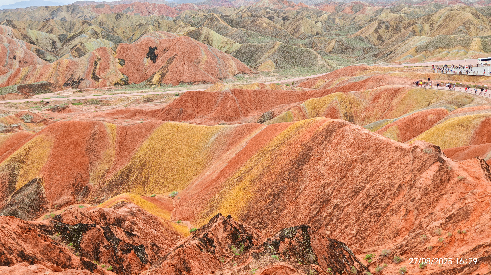

旅行的意義不在於走過多少地方，而是在於你如何與這個世界產生共鳴。對於許多習慣了跟團旅遊的人來說，邁出自由行的第一步往往充滿了未知與焦慮。然而，一場精心策劃的自由行，能帶給你無與倫比的自主權與深度體驗。從挑選目的地、控管預算、預訂高CP值住宿，到利用地圖工具規劃每日行程，自由行的每一個環節都是一場自我能力的修行。
✈️ 我的絲綢之路
2025年的盛夏，我踏進了張掖國家地質公園。當親眼望見那連綿起伏的彩色丘陵——赭紅、薑黃、灰白、靛青如波浪般交錯層疊，震撼得說不出話。彷彿大地被上帝打翻的調色盤染過，又像億萬年時光凝固成的油畫。出發前我只當是「看石頭」，真正站在觀景台上，才驚覺自己的渺小。風很乾，陽光刺眼，但每一步都想停下來細看。這不是打卡，是一場與地球深層記憶的無聲對話。
